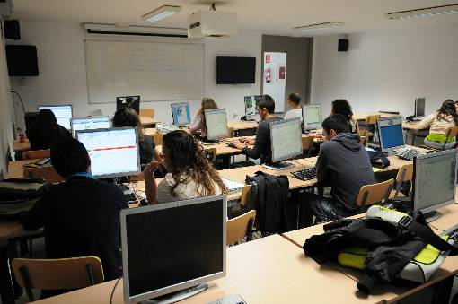

Programación de Talleres de Inserción Laboral
En el marco del evento de empleo universitario, la Universidad Pablo de Olavide ofrece un catálogo de talleres prácticos orientados a potenciar la empleabilidad, la simulación de entrevistas y el uso de herramientas tecnológicas avanzadas para el mercado de trabajo.

Áreas de Formación y Contenidos
Los talleres orientados al empleo se dividen en las siguientes especialidades:
-
Empleabilidad y Herramientas Digitales
- Optimización de currículum, perfiles profesionales en redes de empleo y marca personal.
- Simulación de entrevistas de trabajo y pruebas de selección técnicas.
-
Competencias Técnicas y Desarrollo Profesional
- Talleres prácticos de metodologías ágiles y gestión de proyectos para el ámbito laboral.
- Uso de herramientas tecnológicas y entornos de trabajo colaborativo demandados por las empresas.
Pasos para la Inscripción a los Talleres de Empleo
- Consultar los prerrequisitos y plazas disponibles de cada taller específico en el programa de empleo.
- Acceder al formulario de matrícula online dentro de los plazos establecidos para las jornadas.
- Recibir la confirmación de admisión y el pase digital en el correo institucional.
Información y Soporte
Para cualquier incidencia o consulta relacionada con las inscripciones a los talleres formativos y de empleo, puedes ponerte en contacto con el comité organizador o a través del vicerrectorado correspondiente.